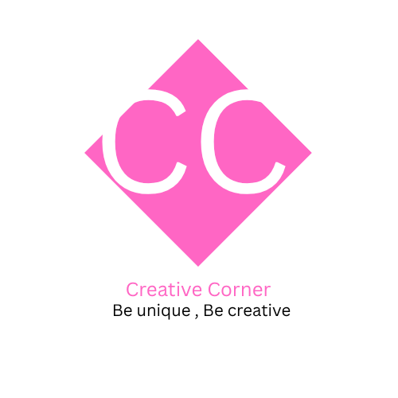

Entry 001 · A new beginning
Dear little notebook,
Today I made a tiny home on the internet. A place for my creativity, my thoughts, and all the little things that make ordinary days feel special.
— Eva ♡

🌷little thoughts, pretty things & daydreams ♡
Hello, little wanderer! Welcome to my tiny corner of the internet. I'm Eva Dandelion — a pen name, a creative heart, and a collector of little moments.
This is where my thoughts meet my daydreams, where I keep little stories, share my crafts, and leave tiny pieces of creativity behind. Make yourself at home. 🌷
Little moments, little thoughts, little pieces of me.
Today I made a tiny home on the internet. A place for my creativity, my thoughts, and all the little things that make ordinary days feel special.
— Eva ♡
Not every day has to be extraordinary. Sometimes a quiet afternoon, a favourite song, or a small creative idea is enough.
— Eva ♡
There are so many things I want to create, stories I want to tell, and little adventures waiting around the corner.
— Eva ♡
Replace this card with your own words whenever you want to share a new little story.
— Eva ♡
Crafts, experiments, handmade things, and creative adventures live here. Come visit my little video corner!
Visit my craft channel ↗Eva Dandelion is my little creative identity. This website is a place for imagination, crafts, small joys, and words that deserve a page of their own.
Like a dandelion floating in the breeze, may every little idea find somewhere beautiful to land.